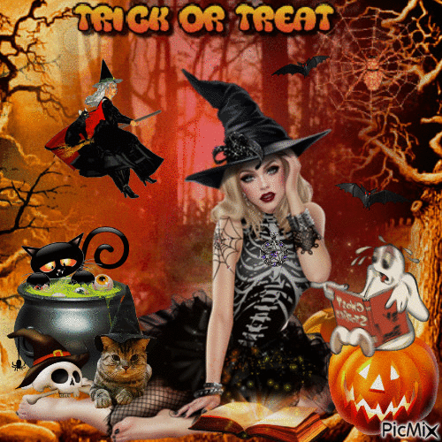

🎃🎃Strasznego Halloween!!🎃🎃
Zwyczaj związany z maskaradą, obchodzony w wielu krajach w wieczór 31 października. Odniesienia do Halloween są często widoczne w kulturze popularnej, głównie amerykańskiej. Halloween najhuczniej jest obchodzony w Stanach Zjednoczonych, Kanadzie, Irlandii, Australii i Wielkiej Brytanii. Mimo że dzień nie jest świętem urzędowym, cieszy się po święcie Bożego Narodzenia największą popularnością. Święto Halloween w Polsce pojawiło się w latach 90. XX w. Głównym symbolem święta jest wydrążona i podświetlona od środka dynia z wyszczerbionymi zębami. Inne popularne motywy to duchy, demony, zombie, wampiry, czarownice, trupie czaszki, nietoperze, czarne koty, pajęczyny, Wilkołaki itp.
